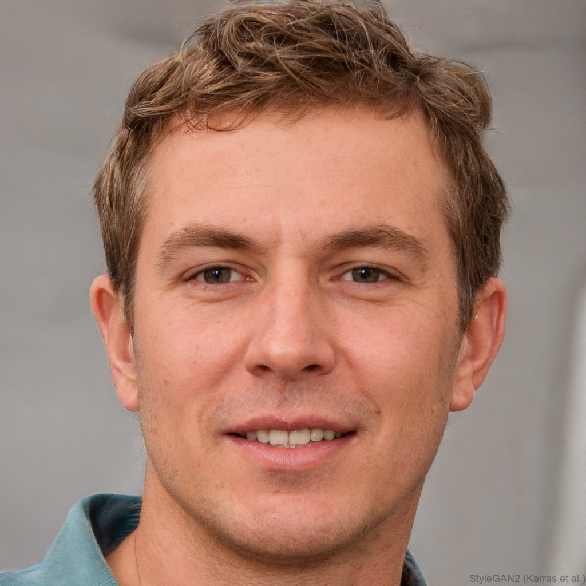

Lebenslauf der fiktiven Figur Livion Erwin Kiserd
Auf dieser Seite finden Sie den Lebenslauf der fiktiven Figur Livion Erwin Kiserd. Das Bild der Figur ist nicht lizensiert und wurde der Seite "thispersondoesnotexist.com" entnommen. Für einfache Navigation verwenden Sie bitte das Inhaltsverzeichnis.

Livion Erwin Kiserd
- Physik Masterstudent an der TU Berlin
Ambitionierter Physik-Student (M.Sc.) mit klarem Fokus auf Quantenphysik und computergestützte Simulationen.
Durch meine fundierte Ausbildung und internationale Erfahrung (Aalto University) verbinde ich theoretische Tiefe mit praktischer Implementierung in Python.
Mein Ziel ist es, die Grenzen des physikalisch Machbaren durch innovative Algorithmen zu erweitern.
Ausbildung
- Seit 2024:
Master of Science in Physik
- 2025:
Aalto University Summer Program (Finnland)
- 2021 - 2024:
Seit 2024:Bachelor of Science in Physik
- 2021:
A-Levels (Canterbury, UK), Abschlussnote: 1,1 (erhielt DPG-Abiturpreis)
Erfahrungen
- 2019: SYDF (German Program)
- Entwicklung eines Prototyps zur Kraftanalyse von Materialien.
- Implementierung einer Kamera-Erkennung zur Bestimmung von Belastungsvektoren basierend auf Geometrie und Materialkonstanten.
- Physik Simulationsprojekte mit Python
Kompetenzen
- Projektmanagement, Softwareentwicklung
- Bedienung von Kryotechnik
- Fähigkeit zur Abstraktion, Modellbildung
- Bewertung und Publikationsfähigkeit von Forschungsergebnissen
- Python (NumPy, SciPy, Matplotlib, Pandas, Qiskit), C++, Bash
- Git (Version Control), LaTeX, Linux/Unix
- Englisch (Muttersprache), Deutsch (Fließend/C1)
Hobbies
- Bouldern
- Astronomische Beobachtung und Fotographie
- Soap-making
- game devolopment